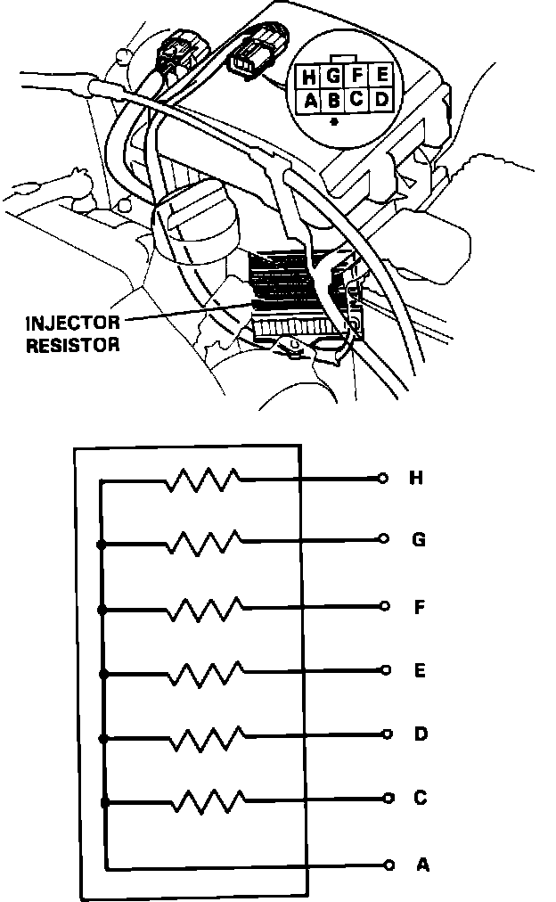
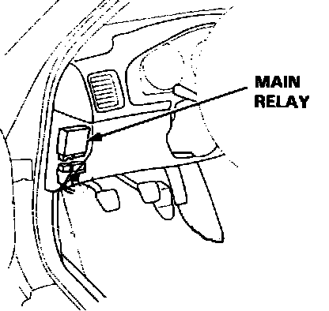

Fuel System Components
Injector Resistor Checking:

INJECTOR RESISTOR
Front of engine compartment between the battery and the left strut tower.
Fuel Delivery System:

FUEL CUT-OFF VALVES
Two valves, one each located top of fuel tank left and right sides.
FUEL FILTER
Left side of the firewall in the engine compartment.
FUEL INJECTORS
Three on each side of the engine directly above the intake valves.
FUEL PRESSURE REGULATOR
Rear of the left fuel rail.
FUEL PUMP
Inside the fuel tank.
FUEL RAIL
Two rails, one above each row of injectors.
FUEL LINES
Routed under the left side of the chassis from the fuel tank to the fuel manifold assembly.
FUEL TANK
Rear center of chassis, ahead of rear wheels.
Main Relay:

FUEL PUMP MAIN RELAY
Left side of the dash as illustrated.